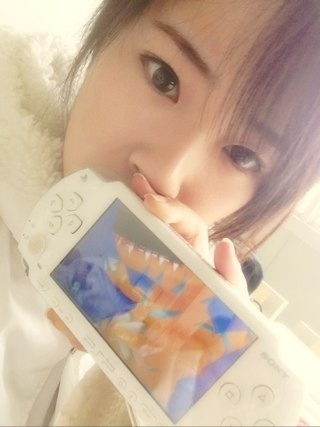

2013/0314Thu（´-`）.｡oO(かずみん×148
こんばんは。
いつも応援ありがとうございます！
受験シーズンはそろそろ終わり、
春がはじまりそうですね。
同級生、遠くのクラスの子でしたが、
受験のいい知らせが耳に入って来て
嬉しくなりました^^
私が高校で勉強を頑張らなかった時に
先生がその子を見習えと...´д` ;ううっ
向こうは私を知らないと思いますが
私が勝手に尊敬してました。笑
頭がいい人って憧れる(u_u)
努力してる人ってもっと尊敬する！
私ももっと吸収しなくては(>_<)
--------
昨日は5thシングル発売日でした(*^^*)
感想待ってます！
撮影秘話でいうと...
まずシャキイズムは男役。
ちなみに相手は偶然川後の陽菜ちゃん！
ダンスの先生がランダムに選んでた
のですが、たまたま陽菜ちゃんに！
決まった瞬間は2人ともキャーとか
可愛い声は出さず、
よっしゃあ！みたいなクールなノリ♪笑
ちなみにかず男は休憩時間

PSPでデジモンを
ひたすらやってました！笑
本当に男子高校生みたいだと
周りからは言われてたよ(￣▽￣)
撮影中はじょーさん(のうじょう様)と
2人で小芝居したり...
だけど演技が大げさすぎたみたいで
1回注意されました。笑
ダンスシーンもジョーさんと隣で
ずっと笑ってました！！
PVで見つけるのは困難な
かず男ですが、ぜひ
探してみて下さい！笑
デコピンは本当に嬉しかったです。
ユニットに選んでもらえる時って
本当に...本当に嬉しい。
偶然を言い訳にしての時より、
何倍も成長した(と思わせて下さい.笑)
高山を見てほしいです。
また今度写真載せますね♪
-------
それでは今日はこの辺で(^^)
今日も花粉症辛すぎた(>_<)
明日も頑張るぞ〜！！
終わり。
2013/03/14 20:00
コメント(596)
おはよ
かずみんのBicycleの歌なんか好き！
64点だったけどね（笑）
64点だったけどね（笑）
シングルよかったでーす＼(^o^)／
かずみん、めっちゃ可愛かったよー(*^^*)
かずみん、めっちゃ可愛かったよー(*^^*)
高山さんー^ - ^
ファイト^o^
ファイト^o^
男役のかずみん見たかった(*^^*)
シャキイズムかずみんあまり映らなかった(*_*)
シャキイズムかずみんあまり映らなかった(*_*)
でこぴん最高やったぜ！
かずみんがあんまりデジモンデジモン言うからおれもゲーム欲しくなっちったよ(笑)
あ、でもおれも小学生くらいまでめっちゃ好きだったんだよ！！カード大量に持ってた(o^^o)
オメガモンとかわかるかなー？あと、すげえキラッキラでザラザラしたカードとかも当てたし！
デジモン勝負したいわ(#^.^#)
ばいっ
ヤッシーです(^-^)v
まだCD買ってないんだよね…
必ず買います!!
へばっまずな(^-^)/~~
まだCD買ってないんだよね…
必ず買います!!
へばっまずな(^-^)/~~
おいっ人中に爪楊枝はめるなー！笑
でこぴんのかずみさんかわいいね(^^♪
ＭＶ一番好きかも
先週のちはやふる新カッコ良かったね。
俺太一派だけど 笑
風邪流行ってるから気をつけような！
おやすみー
でこぴんのかずみさんかわいいね(^^♪
ＭＶ一番好きかも
先週のちはやふる新カッコ良かったね。
俺太一派だけど 笑
風邪流行ってるから気をつけような！
おやすみー
ハツコメです。かずみさんは努力家です。
テレビの画面からひしひし伝わってきます。これからも応援します。
テレビの画面からひしひし伝わってきます。これからも応援します。
かずみーん
デジモンとか笑
でもかずみんらしいね！
ホワイトハイ、また見たいな～
これからも頑張ってね！
応援してます♪
 はるき
はるき
デジモンとか笑
でもかずみんらしいね！
ホワイトハイ、また見たいな～
これからも頑張ってね！
応援してます♪
ＰＳＰでデジモン本当にやってるんだー
かずみん( *・ω・)ノ
かず男かっこよかったよー＼(^o^)／
決闘シーンで能條さんと応援してるとこちゃんと見つけました♪
最初の教室のシーンも＼(^o^)／
でこぴんもかわいすぎてヘビロテ中♪
今回は神曲が多くて聞きまくりすぎてるよ(笑)
どんまーいもかずみんらしくて面白かった＼(^o^)／
もうすぐ握手会♪
楽しみ過ぎて夜も眠れないわ(笑)
花粉症お大事に(;o;)
ゆみちでした(・∀・)
かず男かっこよかったよー＼(^o^)／
決闘シーンで能條さんと応援してるとこちゃんと見つけました♪
最初の教室のシーンも＼(^o^)／
でこぴんもかわいすぎてヘビロテ中♪
今回は神曲が多くて聞きまくりすぎてるよ(笑)
どんまーいもかずみんらしくて面白かった＼(^o^)／
もうすぐ握手会♪
楽しみ過ぎて夜も眠れないわ(笑)
花粉症お大事に(;o;)
ゆみちでした(・∀・)
かずみん可愛い(*ゝ｀ω・)
オリコンデイリー１位おめでとう（*^_^*）
俺は、typeA・B・C全部買いました（＾ｖ＾）
話変わるけど、昨日、中学校を卒業しました（＾－＾）
とっても嬉しいです（＾ｖ＾）
あと、花粉症も薬を飲んだら、
治ってきました(^O^)
こっちも、とっても嬉しいです（＾ｖ＾）
あと、かずみんの、個人PV見たよ(^O^)
めちゃくちゃよかった(^'^)
買ってよかったです（＾ｖ＾）
あと、最近は、君の名は希望をヘビロテしてます(^O^)
いい曲だ～
そうそう、この曲、クラスで、宣伝しておきました(^'^)
みんな買ってくれますように(^O^)
最後に、今度の幕張の全握行きま～す
よろしくお願いします(^O^)
応援してます
明日も頑張ってください（*^_^*）
俺は、typeA・B・C全部買いました（＾ｖ＾）
話変わるけど、昨日、中学校を卒業しました（＾－＾）
とっても嬉しいです（＾ｖ＾）
あと、花粉症も薬を飲んだら、
治ってきました(^O^)
こっちも、とっても嬉しいです（＾ｖ＾）
あと、かずみんの、個人PV見たよ(^O^)
めちゃくちゃよかった(^'^)
買ってよかったです（＾ｖ＾）
あと、最近は、君の名は希望をヘビロテしてます(^O^)
いい曲だ～
そうそう、この曲、クラスで、宣伝しておきました(^'^)
みんな買ってくれますように(^O^)
最後に、今度の幕張の全握行きま～す
よろしくお願いします(^O^)
応援してます
明日も頑張ってください（*^_^*）
かずみーん*\(^o^)/*
君の名は希望買ったよー！
だから全握かずみんのとこ行くね！(^-^)
待っててーーー！笑
そして昨日高校卒業しました*\(^o^)/*
春から専門学生頑張るぜ(´･Д･)」
君の名は希望買ったよー！
だから全握かずみんのとこ行くね！(^-^)
待っててーーー！笑
そして昨日高校卒業しました*\(^o^)/*
春から専門学生頑張るぜ(´･Д･)」
こんばんは。
花粉きびしいですね。
私もｶﾞﾋﾞｶﾞﾋﾞのズルズルですが
明後日の握手会、よろしくお願いします。
花粉きびしいですね。
私もｶﾞﾋﾞｶﾞﾋﾞのズルズルですが
明後日の握手会、よろしくお願いします。
前にも書いたけどデコピンでもわかるように、かずみんは乃木坂のエースだよ
全てかずみんが美味しく画面に映るのは天性の才能。百戦錬磨の芸人達が瞬時にかずみんを探し当てる。面白いだけではダメ。かずみんは綺麗だし、可愛い。
文句を一言。また生写真はかずみんで無かった。
本当に入ってるの？←くじ引きでハズれたおばさんが必ず言うことば
全てかずみんが美味しく画面に映るのは天性の才能。百戦錬磨の芸人達が瞬時にかずみんを探し当てる。面白いだけではダメ。かずみんは綺麗だし、可愛い。
文句を一言。また生写真はかずみんで無かった。
本当に入ってるの？←くじ引きでハズれたおばさんが必ず言うことば
ｼｬｷｲｽﾞﾑ
唄もMVも
サイコーヾ(≧∇≦*)/
かずみん見つけられない自分
どんまーい(￣∇￣)
がんばって探してみる(･ω･`三′･ω･)
唄もMVも
サイコーヾ(≧∇≦*)/
かずみん見つけられない自分
どんまーい(￣∇￣)
がんばって探してみる(･ω･`三′･ω･)
デジモンか…。
俺もあの時のデジモンは大好きでやりたいんだけど、買えないんだよね^_^;
あと、CDね！
でこぴん最高だったよ(^O^)／
やっぱり、ユニットはいいね(o^^o)
俺もあの時のデジモンは大好きでやりたいんだけど、買えないんだよね^_^;
あと、CDね！
でこぴん最高だったよ(^O^)／
やっぱり、ユニットはいいね(o^^o)
初コメです(^-^)
和柄が大好きな和柄ボーイです！
個人PV観て好きになっちゃったやぁ(о´∀`о)
これからコメントするね♪
和柄が大好きな和柄ボーイです！
個人PV観て好きになっちゃったやぁ(о´∀`о)
これからコメントするね♪
こんばんわ〜
来年受験なので頑張ります！
自分はPSPて喧嘩番長しかやってないです（≧∇≦）
来年受験なので頑張ります！
自分はPSPて喧嘩番長しかやってないです（≧∇≦）
花粉症は、くすりが一番ですよ！
強い花粉症のくすりだと、眠くなることがありますが(*￣∇￣*)
暖かいので、暑さ、花粉に負けず頑張って下さい⊂(^(工)^)⊃
新曲のタイプＡ買いました(=^ェ^=)ノ
強い花粉症のくすりだと、眠くなることがありますが(*￣∇￣*)
暖かいので、暑さ、花粉に負けず頑張って下さい⊂(^(工)^)⊃
新曲のタイプＡ買いました(=^ェ^=)ノ
かずみんヤッホー(o・・o)/
ごめん個人PVまだ見れてない(>_<)
まっちゅんのすらみてないw
まりかだけ鬼ループしてる←
デジモン頑張ってるな(笑)
おもいっきりグレイモン写ってる(笑)
早くクリアするしか！
でこぴんは公式サイトで見た
あれ可愛いな( ´∀｀)
写真楽しみにしてる
明日も１日がんばりんご！←
明後日楽しみや
ほなねﾉｼ
ごめん個人PVまだ見れてない(>_<)
まっちゅんのすらみてないw
まりかだけ鬼ループしてる←
デジモン頑張ってるな(笑)
おもいっきりグレイモン写ってる(笑)
早くクリアするしか！
でこぴんは公式サイトで見た
あれ可愛いな( ´∀｀)
写真楽しみにしてる
明日も１日がんばりんご！←
明後日楽しみや
ほなねﾉｼ
おつかれー(^o^)
明日もがんばろう！
明日もがんばろう！
かずみーん♪
ＣＤとりあえず全部見たよ！
君の名は希望のかずみんはとにかく面白かった！ｗ
シャキイズムはねー、かずみん男装カッコイイ(*^^*)
男装メンバーの中でも目立ってカッコよかった！！！
あと、でこぴん！
みんな可愛かったー**
かずみんのソロの所、歌上手すぎてびっくりした！
めっちゃ衣装似合ってて可愛かった(*^^*)
偶然を言い訳にしてのかずみんも最高だったけど、色々な面でほんと前回よりすごかった♪
またかずみんのユニット曲とかやってほしいな♪
楽しみにしてますｗ
個人ＰＶ！
あれは面白すぎた！！
走れｂｉｃｙｃｌｅ歌いだした時とか面白すぎてｗｗ
あと、最後だけなんでどんまいじゃないのかもうわかんないし面白かった！
自分的には今回の個人ＰＶかずみんのが１番お気に入り☆
PSP おもしろいですよね！
僕はモンスターハンターなうです！
かずみんかわいい
僕はモンスターハンターなうです！
かずみんかわいい
CD買ったよー！！
でこぴんのPVのかずみん可愛すぎ(((o(*ﾟ▽ﾟ*)o)))
京都個別握手で会えるのを楽しみにしてます*\(^o^)/*
でこぴんのPVのかずみん可愛すぎ(((o(*ﾟ▽ﾟ*)o)))
京都個別握手で会えるのを楽しみにしてます*\(^o^)/*
私も今年は受験生。
頑張りたいと思います(｀・ω・´)
かず男見つけるのは
至難の技ですねorz
ケータイで見たら
全くわかりませんでした
(´；ω；`)
でこぴんも良い曲ですね!!
一実さんのいろんな面が見れて
ユニットっていいなーと思いました♪
気管支炎は大丈夫ですか
(´・ω・｀)？
体調にはくれぐれも気をつけて!
頑張りたいと思います(｀・ω・´)
かず男見つけるのは
至難の技ですねorz
ケータイで見たら
全くわかりませんでした
(´；ω；`)
でこぴんも良い曲ですね!!
一実さんのいろんな面が見れて
ユニットっていいなーと思いました♪
気管支炎は大丈夫ですか
(´・ω・｀)？
体調にはくれぐれも気をつけて!
ベーちゃんです！！
シャキイズムのペア川後ちゃんと一緒でよかったですね
飴と鞭コンビ復活ですね笑
でこぴん見ましたー
いつもと違ったかずみんで可愛かったです
歌声も天使でした笑
幕張の個別行くんでよろしくー(*^^*)
ってことでまたー
アメイジング*\(^o^)/*
シャキイズムのペア川後ちゃんと一緒でよかったですね
飴と鞭コンビ復活ですね笑
でこぴん見ましたー
いつもと違ったかずみんで可愛かったです
歌声も天使でした笑
幕張の個別行くんでよろしくー(*^^*)
ってことでまたー
アメイジング*\(^o^)/*
こんばんわに(^ー゜)ノ
君の名は希望買ったで！
もう全部好きすぎて困るわ♪
だから感想はいいません(笑)
PSPのデジモンいいなぁー
めっちゃ興味あるわ(^-^)
また感想お願いします♪
では
ばいばいきーん( ´∀`)/~~
君の名は希望買ったで！
もう全部好きすぎて困るわ♪
だから感想はいいません(笑)
PSPのデジモンいいなぁー
めっちゃ興味あるわ(^-^)
また感想お願いします♪
では
ばいばいきーん( ´∀`)/~~
お疲れ様です♪
シャキイズムはまだ見つからない(T0T)
後でゆっくり探します!
デコピンのかずみんは神がかり的に可愛すぎます(≧∇≦)
デコピンをヘビーローテーション!!(笑)しちゃってます
シャキイズムはまだ見つからない(T0T)
後でゆっくり探します!
デコピンのかずみんは神がかり的に可愛すぎます(≧∇≦)
デコピンをヘビーローテーション!!(笑)しちゃってます
こんばんは(^o^)/
シングルデイリー1位おめでとう。ウィークリーも1位目指して頑張ろうね＼(^o^)／
僕は来週大学の卒業式で4月から社会人になるので春が来て欲しいようでまだもう少し遊びたい感じです(^_^;)
握手会に行ける事が減るかもだけどまた行けるのを楽しみに仕事頑張ります。
曲は全部聴いたけどDVDはまだなので観たら感想書くね♪
では今日も１日お疲れ様。明日も１日頑張ろうね☆
シングルデイリー1位おめでとう。ウィークリーも1位目指して頑張ろうね＼(^o^)／
僕は来週大学の卒業式で4月から社会人になるので春が来て欲しいようでまだもう少し遊びたい感じです(^_^;)
握手会に行ける事が減るかもだけどまた行けるのを楽しみに仕事頑張ります。
曲は全部聴いたけどDVDはまだなので観たら感想書くね♪
では今日も１日お疲れ様。明日も１日頑張ろうね☆
でこぴんめっちゃいい曲だねもうかなりリピートしてます かずみんはほんとにデジモン好きだね
かずみんはほんとにデジモン好きだね
明日もお仕事がんばってね
明日もお仕事がんばってね
かずみーん
デジモン楽しそうだね＼(^o^)／
おれも買おうかなー笑
デコピン聞いたよー
いい曲だし、かずみんかわいかった！
かずみん無理しないでがんばってね！
がんばれアメイジング
かずみだいすきだよ
うすす
かずみだいすきだよ
うすす
シャキイズムのPV好きです。
見てると胸が熱くなる。
デコピンは面白い映像やなと思いました。
個人PVは剣道やってるとこ、見れてよかった。
やっぱり道着姿が様になってました。
僕もまた剣道やりたい。
花粉症たいへんですね。
都会の方がキツイのかな、、、
見てると胸が熱くなる。
デコピンは面白い映像やなと思いました。
個人PVは剣道やってるとこ、見れてよかった。
やっぱり道着姿が様になってました。
僕もまた剣道やりたい。
花粉症たいへんですね。
都会の方がキツイのかな、、、
かずみん*\(^o^)/*、
かずみん可愛い♪(*^^)o∀*∀o(^^*)♪
かずみん可愛い♪(*^^)o∀*∀o(^^*)♪
まだ買ってないけれど
すごく楽しみだよ(*´∀`*)
ひなちゃんかぁ★
いいじゃん！
いいじゃん！
すごく楽しみだよ(*´∀`*)
ひなちゃんかぁ★
いいじゃん！
いいじゃん！
君の名は希望買いましたよ！
そしたらかずみんの生写真が当たりました(^-^)/
めっちゃ可愛くて嬉しかったです(*^^*)
デコピン可愛いです＼(^o^)／
幕張である全握に行くので
ミニLIVEが楽しみです(((o(*ﾟ▽ﾟ*)o)))
では明日もお仕事など頑張ってください！
ではまたねー☆
CD買ったよー
個人PVいいね。高山さんの「走れbicycle」のカラオケ聴けるし
どんまーい
個人PVいいね。高山さんの「走れbicycle」のカラオケ聴けるし
どんまーい
花粉やばいねっ笑
あとねーー
高校合格したんだーー！！
おめでとうは？笑
CDは全部買ったよー
デコピンのPVめちゃいいねっ！
可愛かったわっ
何回みたことかっ笑
かわいいかずみん
を一気に三人も見れるなんて！！
とりあえず仕事頑張ってね！
テレビはめちゃ楽しみにしてるからっ
今から
見るねー
感想は
幕張で
んじゃあ
小さな事からコツコツと
ポジティブかずみん
見るねー
感想は
幕張で
んじゃあ
小さな事からコツコツと
ポジティブかずみん
こんばんわo(^▽^)o
君の名は希望、何回聞いてもいいわー
一回、泣いてしまったしwww
昨日、かずみさんの握手券届きました
ってことで何が何でも行きます（≧∇≦）
行くときは、絶対名前おぼえてもらえる
格好で行きます☆*:.｡. o(≧▽≦)o .｡.:*☆
では、ヤー!!!
君の名は希望、何回聞いてもいいわー
一回、泣いてしまったしwww
昨日、かずみさんの握手券届きました
ってことで何が何でも行きます（≧∇≦）
行くときは、絶対名前おぼえてもらえる
格好で行きます☆*:.｡. o(≧▽≦)o .｡.:*☆
では、ヤー!!!
かずみーんヽ(^○^)ノ
CD買ったよ～ッ！個人PV好き～(〃∇〃)どんまーい☆ミ
シャキイズム頑張って探したよ！
かずみんのペア誰かなって一生懸命見て、飴鞭だ！って思ってたらほんとに当たってた～ヽ(^○^)ノわーいヽ(^○^)ノ
でこぴんめっっっちゃ可愛い(ノ_＜。)！！！！！
もうかずみんほんとに可愛くて憧れる(`へ´*)！！！！！！！
でこぴんの写メも楽しみにしてるよおぉぉお☆ミ
CD買ったよ～ッ！個人PV好き～(〃∇〃)どんまーい☆ミ
シャキイズム頑張って探したよ！
かずみんのペア誰かなって一生懸命見て、飴鞭だ！って思ってたらほんとに当たってた～ヽ(^○^)ノわーいヽ(^○^)ノ
でこぴんめっっっちゃ可愛い(ノ_＜。)！！！！！
もうかずみんほんとに可愛くて憧れる(`へ´*)！！！！！！！
でこぴんの写メも楽しみにしてるよおぉぉお☆ミ
５Th購入しましたよ。
デイリーランキングで１位みたいですね。これで４枚連続で１位となりそうですね。
君の名は希望でのかずみんは水玉模様で発見しやすかった。
じょーさんとのお芝居はちょっと大げさだったかな？ＤＴＤＸくらいの口調がよかったな。
かず男の登場あった？何度も一時停止したけど見当たらなかったな？
やっぱりでこぴんのPVはとても良かったです。
かずみん、まいやん、まいまい、サユリンゴ、ななみがドンドン増殖していくので楽しませてもらいました。
とくにシルクハットを被ったかずみんがマジックで皆の登場はビックリしました。
握手会はまあやと同じレーンだね。握力を鍛えて頑張ってね。握手会は必ずいきますからね。
(´_ゝ｀)
デイリーランキングで１位みたいですね。これで４枚連続で１位となりそうですね。
君の名は希望でのかずみんは水玉模様で発見しやすかった。
じょーさんとのお芝居はちょっと大げさだったかな？ＤＴＤＸくらいの口調がよかったな。
かず男の登場あった？何度も一時停止したけど見当たらなかったな？
やっぱりでこぴんのPVはとても良かったです。
かずみん、まいやん、まいまい、サユリンゴ、ななみがドンドン増殖していくので楽しませてもらいました。
とくにシルクハットを被ったかずみんがマジックで皆の登場はビックリしました。
握手会はまあやと同じレーンだね。握力を鍛えて頑張ってね。握手会は必ずいきますからね。
(´_ゝ｀)
か、か、か、か、か、か、
たかやまーーーーーーーーー！！！！！
かずみーーーーーん！！！！
あいかわらずきれいやな！
ほんでデジモンとかセンスええなぁ！
センスよすぎやで！！笑
応援してるで。！
個人PVマジで面白かった！（笑）
かずみん、こんばんは！！！
花粉対策にはちみつ投与中のトムジェリ♪です(*^^)v
はちみつ効果で、花粉症軽減、のど回復！肌もすべすべになった…
いいことずくめだから、アレルギーがなければ、
かずみんも是非試してみてください～♪
シャキイズムも観たよ。
どうにか「かず男」の存在はわかったけど、ペアとか芝居までよくわからなかったので、
もう少し研究してみます(^-^;)
俺…男子校だったけど、かず男とだったらいいy（爆）
デコピンとかまだ聴いてないんだ！
偶然を…のときもものすごくいい歌で幸せな気分になれたけど、
今度のはどんなかな？聴くの楽しみにしています！！！
花粉対策にはちみつ投与中のトムジェリ♪です(*^^)v
はちみつ効果で、花粉症軽減、のど回復！肌もすべすべになった…
いいことずくめだから、アレルギーがなければ、
かずみんも是非試してみてください～♪
シャキイズムも観たよ。
どうにか「かず男」の存在はわかったけど、ペアとか芝居までよくわからなかったので、
もう少し研究してみます(^-^;)
俺…男子校だったけど、かず男とだったらいいy（爆）
デコピンとかまだ聴いてないんだ！
偶然を…のときもものすごくいい歌で幸せな気分になれたけど、
今度のはどんなかな？聴くの楽しみにしています！！！
やっぱデジモンやっていたかw
なんとなく想像ついたw
応援してるから頑張って！
なんとなく想像ついたw
応援してるから頑張って！


やびゃあ